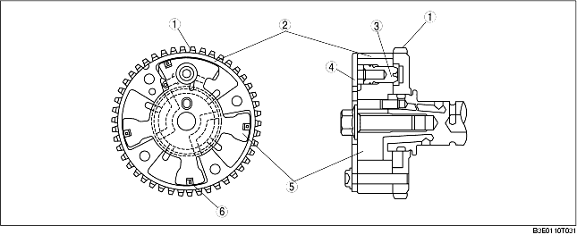

• The variable valve timing actuator consists of the following: a housing case integrated with the camshaft sprocket, a cover, a camshaft integrated rotor, and a stopper pin that retains the rotor and case when the engine stops. Also, the rotor has a chip seal that seals the valve timing advance chamber and the valve timing retard chamber.
• The variable valve timing actuator cannot be disassembled because it is a precision unit.

.